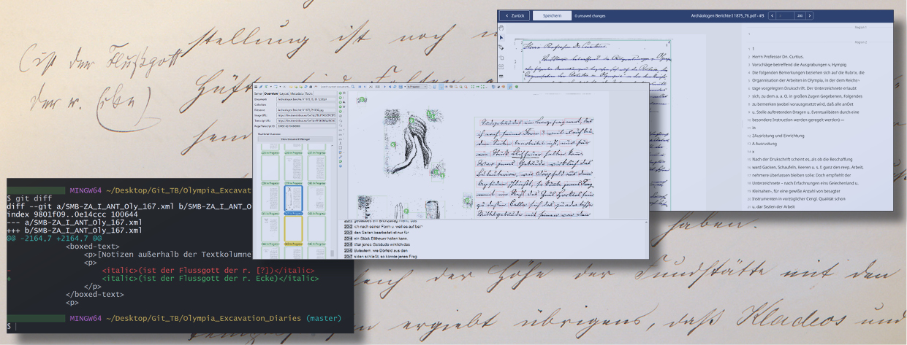

Olympia Excavation Diaries
A Collaborative Approach
|  |
| P. Baumeister & K. Zielke 2024 |
In spring 2024, the publication of the two-volume transcript of the diaries of the Olympia excavations of 1875/1876 and 1876/1877, which are kept in the Central Archive of the Staatliche Museen zu Berlin, laid the foundation for a series of publications documenting the early excavations at Olympia, see DOI Link 1 and DOI Link 2.
In order to ensure that the newly gained insights into the understanding of the site, but also into the understanding of the documents themselves, can be tracked continuously and in a structured form as part of the Olympia project, the transcripts of the documents will be made available through Git. This tool makes it possible to enrich the texts with annotations, for example in the form of links to other information resources, links to standard data or the addition of other contextual information. These additions can be links that point to contemporary research, allowing for a more dynamic interplay between archival material and current work. Even if the primary users are the scholars involved in specific projects within Olympia, it will be interesting to see whether the documents are noticed by a wider community and whether serious and, above all, scientifically sound suggestions are made.
The files are named after the call numbers of the documents in the Central Archive of the Staatliche Museen zu Berlin:
- Archäologisches Tagebuch der Olympia-Grabung Grabungskampagne I, 1875-1876: SMB-ZA_I_ANT_Oly_167.xml
- Archäologisches Tagebuch der Olympia-Grabung Grabungskampagne II, 1876-1877: SMB-ZA_I_ANT_Oly_168.xml
For more on the project see:
- O. Pilz - M. Maischberger, Editorial, in: Grabungsgeschichte(n). Die archäologische Dokumentation der frühen Olympia-Grabung (2024)
- P. Baumeister - K. Zielke, Grabungsgeschichte(n) digital: Ein neues Format zur Erschließung, Publikation und Git-basierter Bearbeitung von Archivdokumenten, Forum for Digital Archaeology (2024)